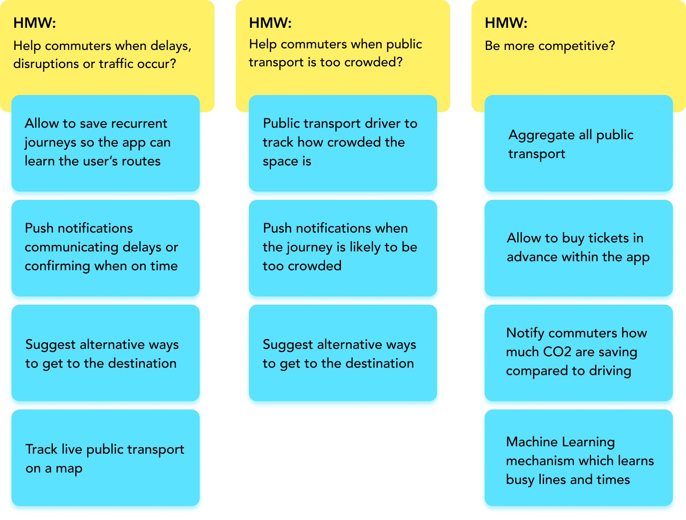

Journey Planner App
A product concept discovery for Greater Manchester to improve the public transport experience
Project Overview
Context: One of the topics in the 2022 roadmap for the GMCA (Greater Manchester Combined Authority) is about sustainability, so to reduce the emissions of CO2 by encouraging more people to use public transport instead of driving.
Challenge prompt: While the GMCA is planning on deploying more eco-friendly buses, I took the initiative of exploring a concept for a digital solution that would improve the public transport experience.
Success Metrics:
- Number of app sign-ups
- Lower percentage of driving commuters
- Lower CO2 emissions
User Research
What's the current situation?
Research goals:
- Determine usage of different types of transportation
- Identify pain points about public transport
Methodologies: Secondary Research + Survey
Secondary Research Findings:
Good start! As of 2019, the majority of commuters are using public transport, although the city is wasting space and resources in unused car parks instead of investing into public transport.
“Roads and car parks take up a whopping 59% of total transport infrastructure surface area in Manchester,” says property analyst Ed Howe, but “only 13% of the daily journeys into and out of the city center are made by car.”
Source: Forbes
However, what's not good is that 23% of people will quit a job because the commute is too stressful.
Source: CNBC
Survey finding:
20 participants who regularly commute to Manchester by either bus, tram or train were recruited from "Mint Manchester" Facebook group to gather their pain points.
Here are some examples which were categorised using an affinity map:
Competitor Analysis
Let's take a look of what existing journey planner apps can offer
Take away: Google Maps seems to offer a more complete range of useful features that cover commuters pain points, however there are common points amongst competitors that suggest a gap in features that could make commuters' life much easier.
Ideation
Cover the pain points and be more competitive
These ideas seem to point to an app that learns commuting habits, notifies updates and suggests best alternatives when needed.

Scenarios Board
Representation of different scenarios the app could cover
Desirability Study / Concept Validation
Find out how the concept is perceived by commuters
10 participants were invited to fill out a desirability survey where examples like in the Scenarios Board were shown to them.
5 main questions were asked:
- Have you ever found yourself in a similar situation?
- What did you do about it?
- How would you feel about the solution presented in this scenario?
- How would you compare they way you approached the situation in the past with the solution presented in this scenario?
- Bonus Question: How do you feel about making eco-friendly choices?
Key Findings:
The Potential
If the trial in Manchester is successful, the solution could be potentially deployed to the whole country.